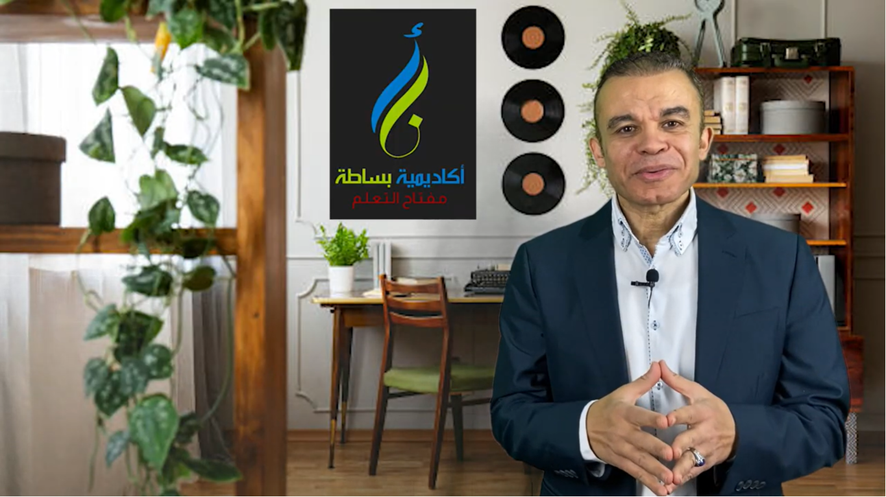

التعلم .. حيــــــاه

الاستاذ/أحمد عبد الجليل
أخصائي تخاطب وصعوبات تعلم خبرة 10 سنوات بالتعليم مؤسس أكاديمية بساطة التعليمية ساعدت طلاب صعوبات التعلم
والمتعثرين دراسيا في أكتر من 20 دولة مختلفه في العالم
أمهات وآباء ومعلمين في دول كثيرة راسلوني وحكوا
لي عن معاناتهم مع أبناؤهم في تعلم الحروف والقراءة والكتابة وطلبوا حلول عملية وواقعية تساعدهم في انهم
يتخلصوا من معاناة
أولادهم مع التعلم
..
فقررت عمل محتوى تعلم يقوم به الأب أو الأم في البيت بدون الحاجه لمعلم، من خلال منهج مدروس ومجرب قبل ذلك
وله نتائج مذهلة على أرض الواقع، وبقدمه لهم في صورة رحلة
سهله وممتعة مدتها 90 يوما .. يتعلم خلالها
الطالب أساسيات القراءة والكتابة من الصفر بداية من الحروف حتى إتقان القراءة والكتابة باذن الله
خطوة صغيرة منك اليوم = قفزة كبيرة في مستقبل أولادك
اراء العملاء

أبو صالح – أمريكا – كاليفورنيا
السلام عليكم ورحمه الله
الاستاذ العزيز احمد عبدالجليل ، تحيه خالصه لك من القلب
من اخيك ابو
صالح ، من ولاية كلفورنيا ارجوا ان تتذكرني
اود ان أشكرك كثيراً على المحتوى التعليمي الممتاز الذي
أفادني كثيرا في التعليم ، وزاد في معرفتي بتعليم أبنائي
وإيصال المعلومة إليهم ، جزاكم الله خيرا
أبو زياد – المملكة العربية السعودية
السلام عليكم ورحمة الله وبركاته
أنا أبو زياد من المدينة المنورة بالمملكة العربية السعودية
أود
أن أشكرك أستاذ أحمد عبدالجليل على ما قدمت من محتوى تعليمي وتربوي ساعد ابني على تخطي
مرحلتين،
الأولى: طيف التوحد
والثاني: نطق الحروف والكلمات
والفضل لله دائماً ثم لك استاذنا
الجليل (أحمد عبدالجليل) على تقدم ابني في التعليم وانتقاله من طفل يعاني .. الى شاب معافى وكأن شيئاً
لم يكن ولله الحمد والمنة
وأنصح الجميع أن يتعامل مع هذا المعلم فهو رجل جمع الله له أموراً عدة
منها محتواه التعليمي والتربوي ومعرفة العلل وحلها وفوق ذلك كله الأدب والاحترام
والحياء
والوقار
وخالص الشكر له ودعواتنا له بالتوفيق.
أبو موسى - الكويت
السلام عليكم أستاذ أحمد . أنا أخوك أبو موسى من الكويت
شكرا على المحتوى التعليمي اللي قدمته يا
أستاذ، وعلى النصائح اللي قدمتها لأولادي واللي انتفعوا بها كتير الحمد لله
وأنا بنصح كل من حولي
انهم ينتفعوا بهذا المحتوى
جزاك الله خير يا أستاذ أحمد
أم جمانه – الجزائر
استاذ احمد لك جزيل الشكر والتقدير والاحترام على اهتمامك ب ابنتي و متابعتك ليها و انا و بنتي استفدنا
كثييييرا من متابعة محتوى تعليم القراءة والكتابة.
و طريقتك شرحك كانت جد مهمة ...
للعلم بنتي
صعوبات تعلم وهي الآن مشااااء الله معدل 8.46 من عشرة سنة اولى ابتدائي
أنا من جزائر ... لك مني جزيل
الشكر في ميزان حسناتك يا رب
والدة طالب - المملكة العربية السعودية
جزاك الله الجنة أستاذ احمد ابني كنت قطعت معاه الأمل، ما كان بيفهم خالص وحتى بالمدرسة كل يوم شكاوي من
المعلم بتاعو
ولما لقيتك يا أستاذ وعملت مثل ما قلت تماما والحمد لله استجاب لطريقتك، وبدأ يفهم
ويكتب كمان
الله يفرحك زي ما فرحتني، الله يحميك ويحفظك يا أستاذ ... جزاك الله خير الجزاء
الله
يفرحك زي ما فرحتني، الله يحميك ويحفظك يا أستاذ ... جزاك الله خير الجزاء
أم أيمن – المغرب
الأستاذ أحمد عبد الجليل ان كنشكرك بزاف بزاف على ذاك الشيئ اللي قدمته لولدي وتبعت له الفيديوهات
ديالك
وربي جاب النتيجة مرضية ، وكنشكرك بزاف لهلا يخطيك ، ونطلب من الله سبحانه وتعالى يوفقك في
المسيرة ديالك
أنا اختك أم أيمن من المغرب
والدة طالب - الشام
سبحان الله أول مرة انبسط من شرح معلم وحاسه حالي راح أقدم لإبني أفضل طريقة شرح، حتى انا كمان استفدت
كتير
>شكرا الك يا استاذ عن جد أحسن طريقة
متدرب من مصر
السلام عليكم ورحمة الله
طريقتك أخذت معي يومين فقط لتعلم كل الحروف وبالتشكيل ، صراحة لم أتوقع النتيجة ل
جزاك الله عني خير الجزاء
د ياسر يوسف – أمريكا – نيويورك
أود أن اشكركم جزيل الشكر استاذ احمد وذلك لما قدمته لاولادنا من مجهود مميز ومعلومات قيمة بأسلوب سلس وممتع ساهم فى رفع مستوى الاولاد فى اللغة العربية...
ودعما معنويا بتشجيعك مما أعطاهم ثقة بانفسهم و جعلهم يحبون اللغة ويستمتعون بها وهذا اكثر مما كنا نطمح لاطفال اللغه العربيه ليست لغتهم الاولى
فلم تكن معلما متمكنا من اللغة العربية فحسب، بل كنت أيضا داعما وموجها ومؤدبا لاولادنا... وقدوة حسنة يقتدون بها فى العلم والخلق
اكثر الله من امثالك ..خالص دعواتنا بالتوفيق والسداد جزاكم الله خيرا
محمد (معلم من الجزائر)
بارك الله فيك أستاذ .. وربنا ينفعنا بطريقتك
كنت أبحث عن طريقة أكاديمية علمية نفسية مدروسة .. ووجدت في طريقتك وأسلوبك ما أبحث عنه
وقد جربتها على مجموعة من الأولاد وكانت النتائج طيبة، لدرجة أن كان هناك طفل في السادسة يصعب عليه نطق الحروف، وبفضل الله ثم طريقتكم بدأ في نطق
الحروف والتمييز بينها
بوركتم يا أستاذنا
عبد العظيم (معلم من السودان)
الأستاذ الفاضل / أحمد عبد الجليل
أنا عبد العظيم معلم من السودان .. برنامجكم ساعدنا كثيرا في التعليم ..شكرا جزيلا لكم أستاذ
أم عمر - مصر
السلام عليكم دكتور أحمد
أحب أشكر حضرتك على المحتوى العلمي اللي بتقدمه أنا استفدت منه في التعامل مع ابني بشكل كبيرجدا ، واستفدت من خبرتك وكمية المعلومات التي لا تبخل بيها علينا
لو هنسأل عن أي حاجه تخص طريقة التعامل و التعليم مع ولادنا
جزاك الله كل خير